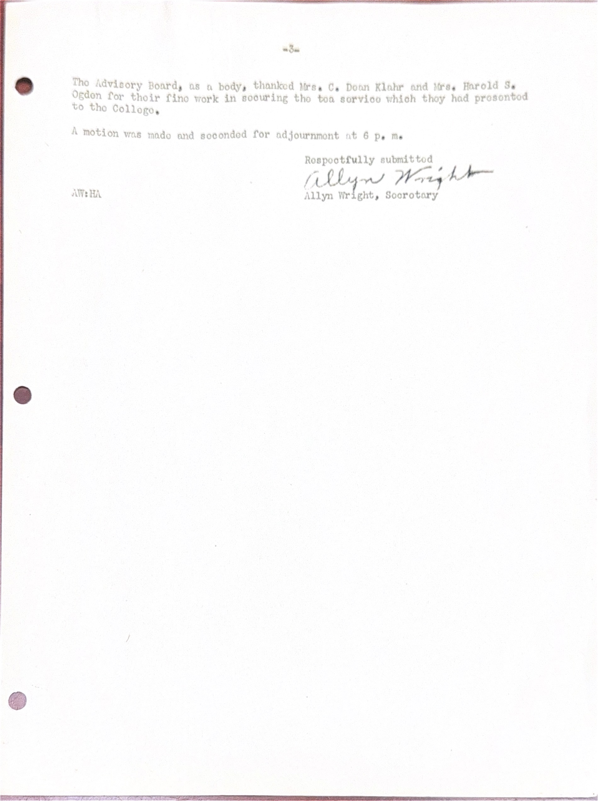
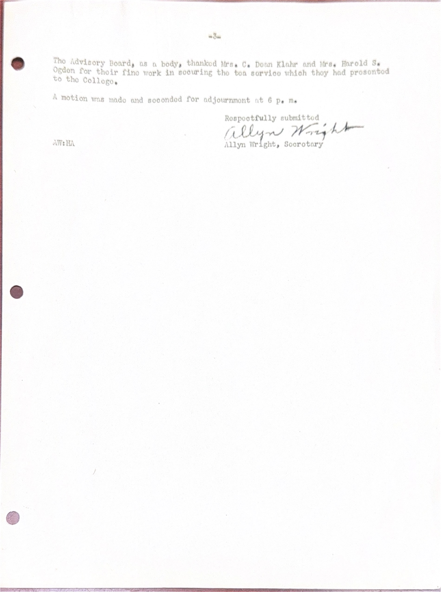

Memorandum for the Pennslyvania State College
1948

 
Memorandum with respect to the desirability of establishing a Junior College Center of Pennsylvania State College in Erie.
The need for such an institution is shown by a survey rather recently conducted under the auspices of Pennsylvania State College among the Seniors and Juniors in our Senior High Schools. That survey developed the facts that:
(a) 173 students interviewed plan to go to college but were not interested in a Pennslyvania State College Branch in Erie. They had other plans. (b) 245 had not planned to go to college, but would be interested if there were a Pennslyvania State College Branch here. (c) 477 were planning to go to college and wore definintely interested in a Pennsylvania State College Branch in Erie.It should be understood that Pennsylvania State College is not seeking entrance to Erie for the purpose of establishing a branch or center here. It has been asked by representatives of large and interested groups of Erie people, including the parents of hundreds of high school pupils, to bring Erie, as it has brought to four other cities of the commonwealth, the benefits of a Junior College, where our young people, both young men and young women, may obtain the benefits of two years of an accredited college course near at home, from which they can go on to finish in other institutions, or, if they are unable to do that, will have had the benefit of two years of advanced study beyond the high school cirriculum.
Pennsylvania State College, a State Institution of high rank, supported by tax money, to which all of us contribute, is interested in (1) the need, which appears to be demonstrated by the results of the survey above referrod to, and (2) the availability of adequate facilities.
Pennsylvania State College was chartered many years ago to afford instruction in the mechanical and agricultural arts. Erie is a growing and increasingly important industrial city, surrounded by a rich and productive agricultural area. In the courses to be offered in a branch of State College here, emphasis would be placed upon engineering, agriculture, chemistry and physics. Incidental, of course, would be instruction in mathematics, language, both English and foreign language, which are liberal arts courses, which are indispensible in a scientific training. There would doubt-less be a limited number of pupils who might be interested only in liberal arts courses, who should be taken care of.
It is apparent, therefore, that with the emphasis on the kind of instruction indicated, there will be no duplication of existing facilities for higher eductation in Erie.
Such a branch of Pennsylvania State College would be interested in providing courses also in training for community service, in the terminal types of training, such as semi-technical training, in medical secretarial work, in sales program and accounting, as well as evening adult programs in music, art writing and speaking etc.
Such a project as outlined has been successfully undertaken in four other Pennslyvania cities, DuBois, Altoona, Hazelton and Pottsville. In all four cities the college was afforded the use of presently unused school buildings. In s ome of the cities named the buildings have been outgrown and further facilities have been provided by the communities for the growing needs of the college. What has been demonstrated to be possible and feasible in the cities referred to should be possible of accomplishment in Erie.
It is suggested that a school bulling not presently needed for classroom work, such as Marshall School on East 12th Street, might be made available, lease to be made directly with State College, at a nominal rental, for a limited period, say five years. The funds necessary to provide necessary laboratory and other facilities and properly maintain the building during the lease period, would be provided by interested local groups, and those funds have been assured. The School District need not be called upon for any expenditure of money.
State College recommends the use of an unused school bullding for a limited period, (1) to determine how satisfactory the service is, and (2) to find out what facilities are going to be needed.
If satisfactory arrangements can be made with the cooperation of the School Board, State College would expect to offer freshman courses for about 200 pupils in September of this year, and would bring to Erie a faulty of twenty full-time instructors, which would, of course, be increased the second year, as these students moved on into the second year and a new freshman class was registered.
Erie needs all the cultural and educational advantages for its young people that it is possible to provide. This project presents an opportunity for the expansion of our educational facilities which should not be lost, and deserves the most thoughtful and careful consideration of our school authorities.